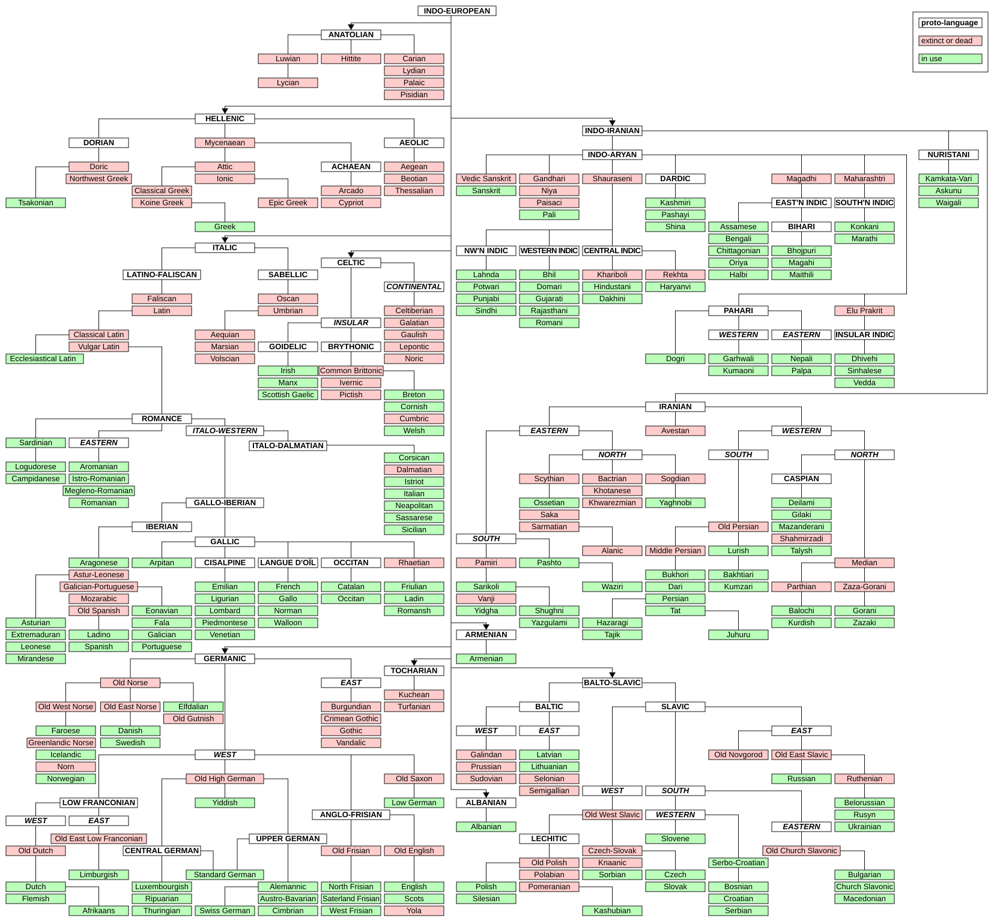

Jezik
Jezikovne skupine in jeziki
- Indoevropski jeziki
- Satemski jeziki
- indoiranski jeziki
- indoarijski jeziki
- iranski jeziki
- nuristanski jeziki
- slovanski jeziki
- južnoslovanski jeziki
- vzhodna veja
- bolgarščina
- makedonščina
- starocerkvenoslovanščina †
- zahodna veja
- bosanščina
- črnogorščina
- hrvaščina (čakavske, kajkavske in štokavske variante)
- slovenščina
- srbščina
- vzhodna veja
- vzhodnoslovanski jeziki
- beloruščina
- rusinščina
- panonska rusinščina
- ruščina
- ukrajinščina
- lemkovščina
- stara novgorodščina †
- zahodnoslovanski jeziki
- češčina
- kašubščina
- lužiška srbščina
- zgornjolužiška srbščina
- spodnjolužiška srbščina
- poljščina
- slovaščina
- šlezijščina
- južnoslovanski jeziki
- baltski jeziki
- Zahodnobaltski jeziki †
- galindski †
- staropruski †
- jatvinški jezik †
- Vzhodnobaltski jeziki
- latvijščina
- latgalščina
- novi kuronski jezik
- litovščina
- semgalski jezik †
- stari kuronski jezik (včasih vključeni med zahodnobaltske) †
- latvijščina
- Zahodnobaltski jeziki †
- armenski jezik
- albanski jezik
- indoiranski jeziki
- Kentumski jeziki
- germanski jeziki
- italski jeziki (vključujejo romanske jezike)
- romanski jeziki
- Italo zahodno romanski:
- italijanščina
- francoščina
- furlanščina
- katalonščina
- okcitanščina
- galicijščina
- portugalščina
- retoromanščina
- španščina
- Vzhodno romanski:
- romunščina
- aromunščina
- dalmatinščina (izumrla)
- Italo zahodno romanski:
-
- Latino-faliskijska veja
- latinski jezik
- faliskijski jezik
- Osko-umbrijska (imenovana tudi sabelska) veja
- oskijski jezik z narečji (marukinski, vestinski, marsijski, pelignijski jezik)
- umbrijska podveja: umbrijski, volskijski, ekvijski jezik
- južnopikenski jezik
- Latino-faliskijska veja
- romanski jeziki
- keltski jeziki
- P-keltski jeziki
- bretonščina
- kornijščina
- kumbrijščina
- valižanščina
- lepontščina
- galatščina
- piktščina
- večina narečij galščine
- Q-keltski jeziki
- irska gelščina
- manska gelščina
- škotska gelščina
- keltiberščina
- nekatera starinska narečja galščine
- P-keltski jeziki
- anatolski jeziki (izumrli)
- hetitščina
- palajščina
- luvijščina
- lidijščina
- likijščina
- karijščina
- milijščina
- pisidščina
- sidetščina
- toharska jezika (izumrla)
- toharski A jezik
- toharski B jezik
- venetski jezik / venetščina (izumrl)
- grški jezik
- Satemski jeziki
